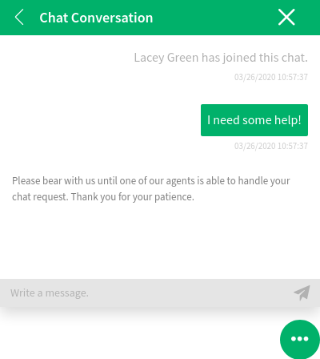
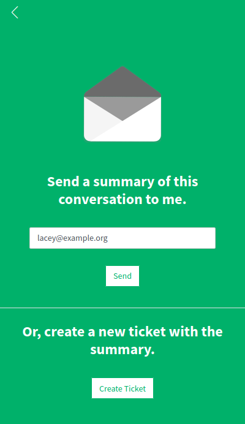

Chat¶
Customer users are not able to start a chat directly with a certain agent, but only to create generic chat requests. The agents can also send chat requests to customer users.
Customer User To Agent¶
To start a chat with an agent:
Click on the New conversation button within the chat window in the bottom right corner of the external interface.
Select the relevant chat channel, if there are defined chat channels.
Type an initial message for the chat request.
Start Chat Window
When an agent accepts the chat request, the chat will open and you can type your messages.

Customer User Chat
Public User to Agent¶
Visitors of the external interface are also not able to start a chat directly with a certain agent, but only to create generic chat requests. As they are not logged in, they need to add a name to start the chat.

Start Chat Window
The steps are the same as described in Customer User to Agent section.
Agent to Customer User¶
To receive a chat request from an agent:
An agent types an initial message to create a chat request.
A browser notification is displayed to inform you. You have to accept the chat request which is displayed in the bottom right corner of the external interface.

Chat Request on External Interface
When you accept the chat request, you can chat now.

Agent to Customer User Chat
When you close the chat, it is possible to send the chat via email or create a ticket from the conversation.
Save the Conversation on External Interface